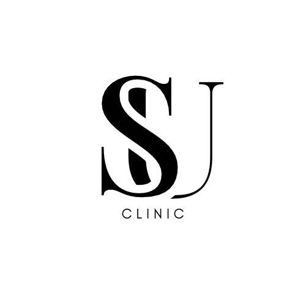

Dyt. Sümeyye Uğur Clinic

SU Clinic, diyetisyen Sümeyye Uğur'un Atatürk Mahallesi Cengiz Gökçek Caddesi'ndeki danışmanlık kliniğidir.
Kilo yönetiminden hastalıklarda beslenmeye kadar, her plan danışanın yaşam düzenine ve hedefine göre hazırlanır ve düzenli kontrollerle güncellenir.
Çalışma yaklaşımı
Yasak yerine düzen
Sevdiğiniz yiyecekleri dışlamayan, uygulanabilir planlar.
Ölçülebilir takip
Süreç vücut analizi ve düzenli kontrollerle izlenir.
Ulaşılabilirlik
Kontroller arasında sorularınız için iletişimde kalınır.
Süreç nasıl işler?
Yasaklar listesi değil, adım adım kurulan bir düzen.
Tanışma görüşmesi
Beslenme alışkanlıklarınız, günlük düzeniniz ve hedefiniz konuşulur.
Ölçüm ve tahliller
Vücut analizi yapılır, varsa güncel tahlil sonuçlarınız değerlendirilir.
Kişiye özel plan
Sevdiğiniz besinleri ve yaşam düzeninizi hesaba katan bir plan hazırlanır.
Düzenli takip
Haftalık ya da iki haftalık kontrollerle plan sizin ilerlemenize göre güncellenir.
Size uygun bir saat bulalım
Formu doldurun ya da arayın, randevunuzu birlikte planlayalım.
Randevu oluşturun